Monteverde
Monteverde is on a peak with a cloud forest. The town is a couple of blocks of tourist stuff. To get there, you have to spend three hours going up an unpaved road with deep ruts, sharp rocks, slippery mud, and no human habitation except for a tire repair shop.
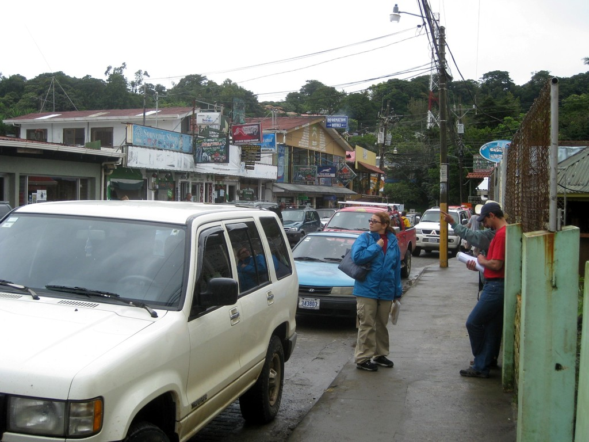 |
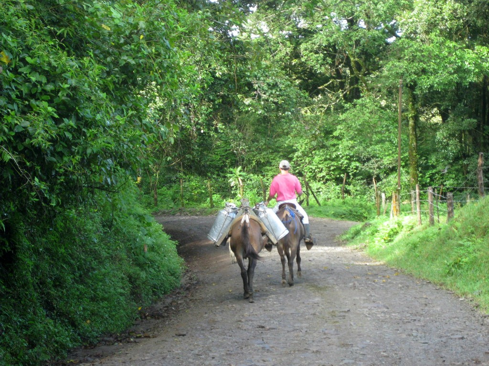 |
Town |
Transporta de leche |
Skywalk
You take a ski lift to the top of the cloud forest, then climb a tower and get pushed off and slide along a cable at about 40 mph. There are eight cables crossing various gorges in the rain forest.
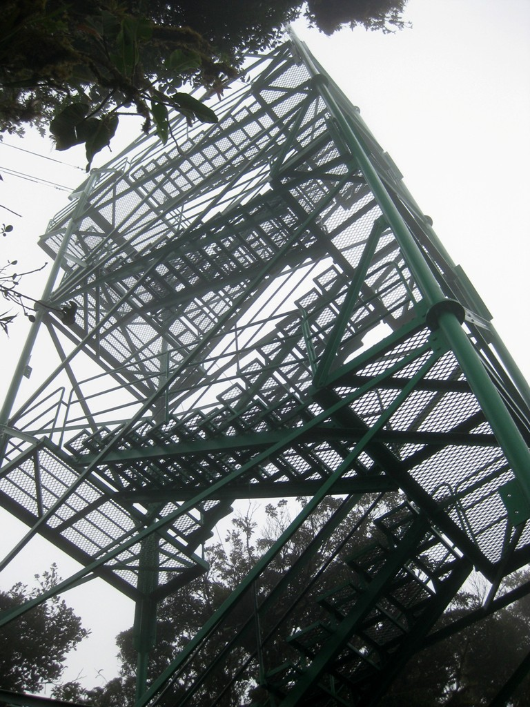 |
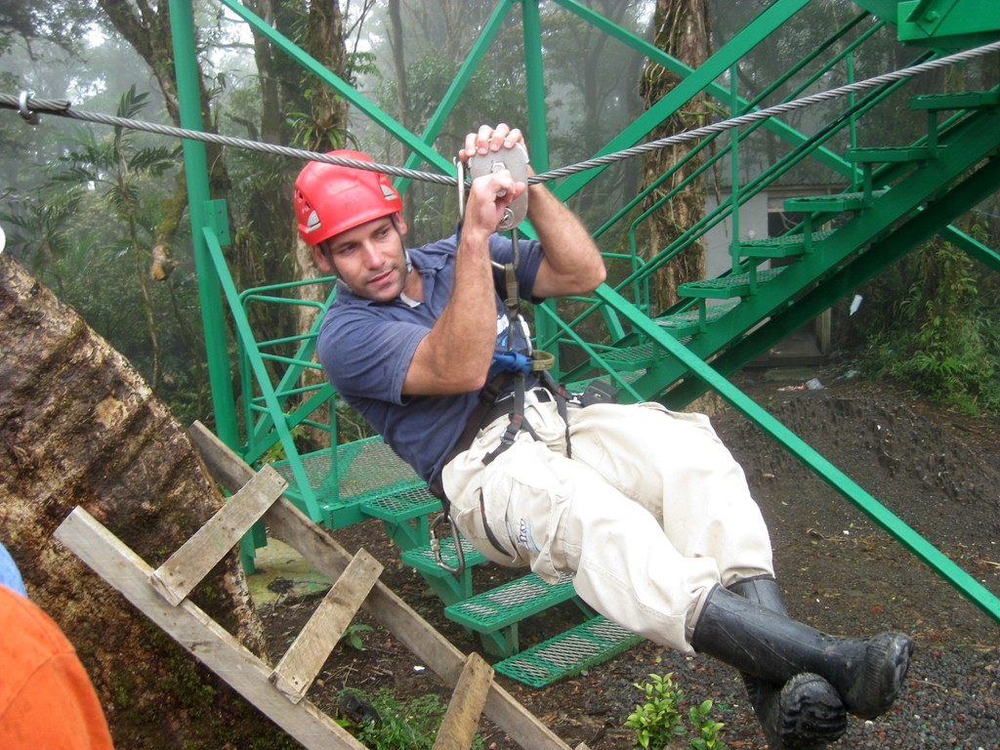 |
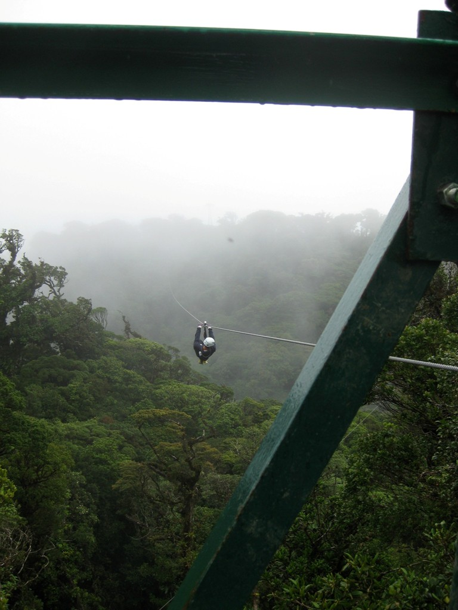 |
Step 1 |
Step 2 |
Step 3 |
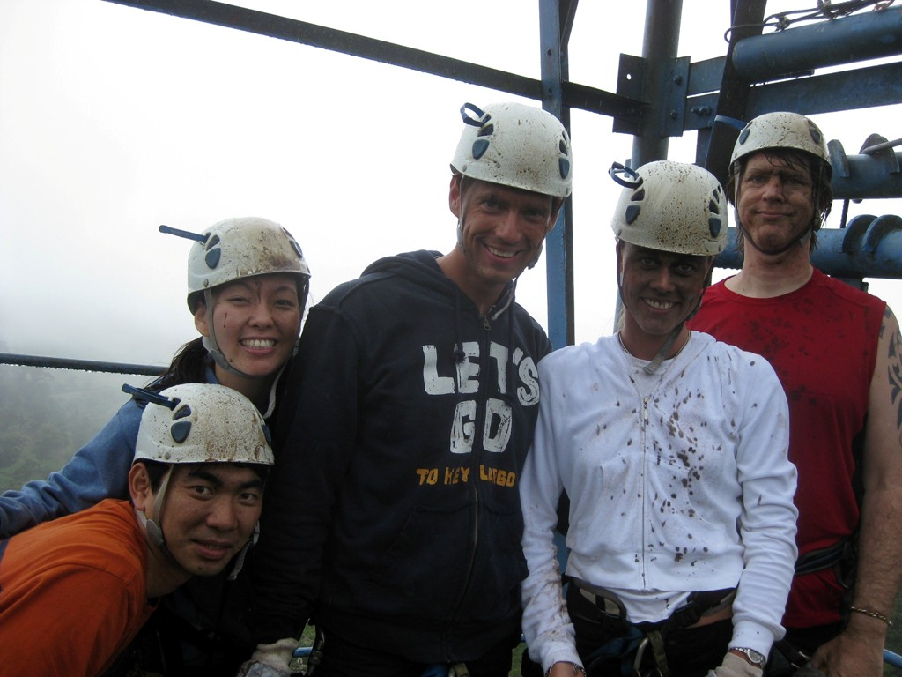 |
Step 4 |
Cloud Forest
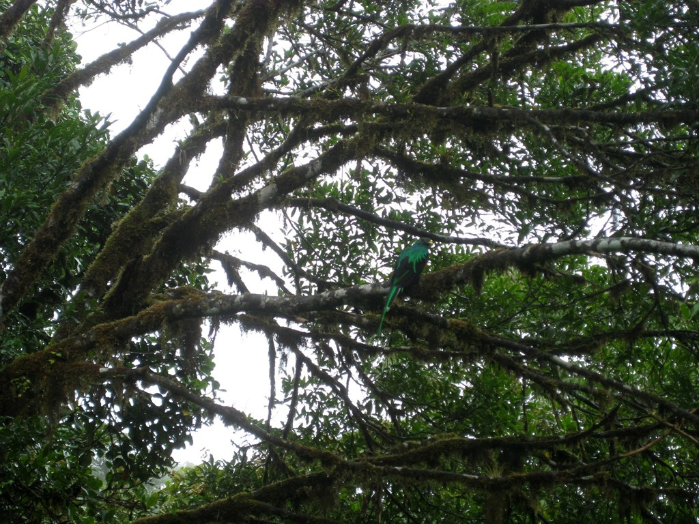 |
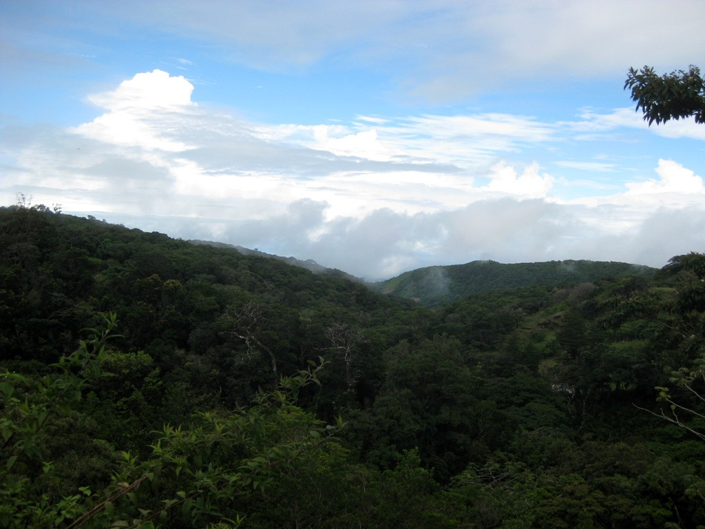 |
|
| The quetzal "follows the avocados". This one should have left the highlands weeks ago. The breast is irridescent red. Male quetzals lose their tail after mating, in order to fit into the nest. They regrow it before the next mating season. Quetzals nest in decaying trees. They peck out holes, but lack the sharp beak of woodpeckers. | View of the cloud forest, clouds lifted. |
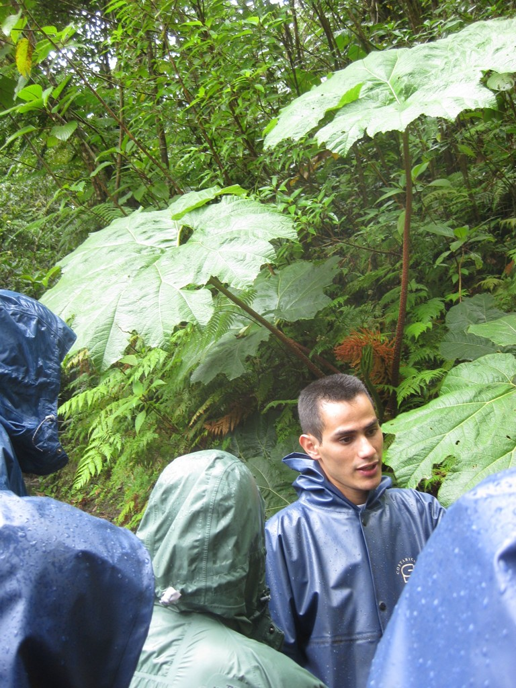 |
| Guide Juan under a poor man's umbrella plant. We also saw a hallucinogenic relative of coffee. That would explain a lot of what happens at work. |
Butterfly Gardens
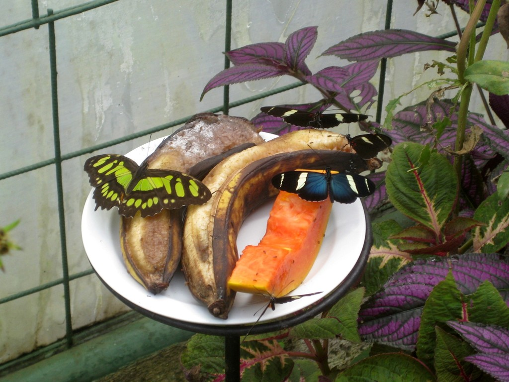 |
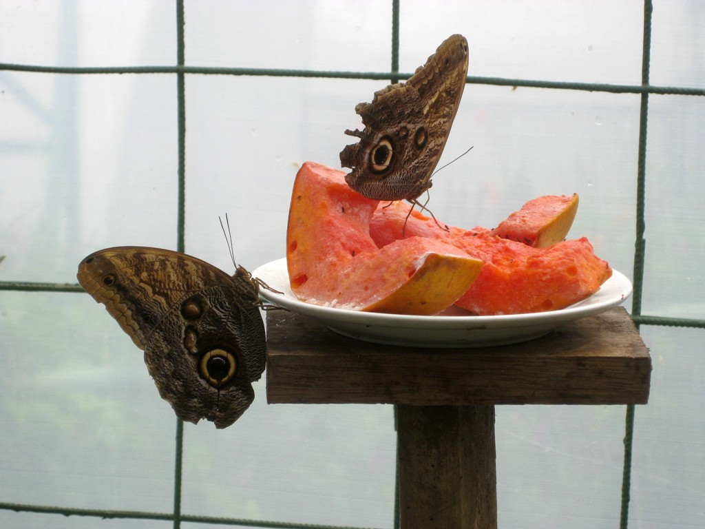 |
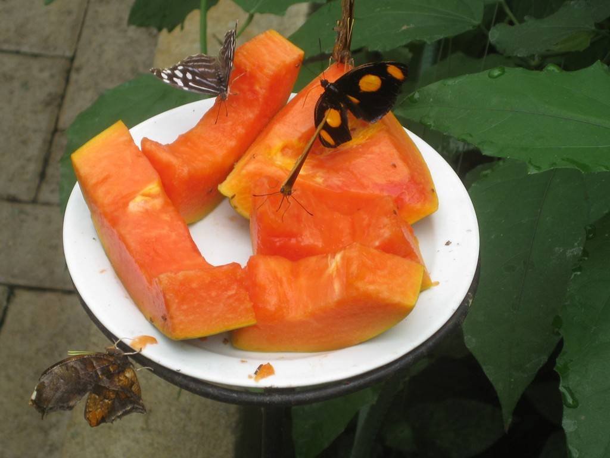 |